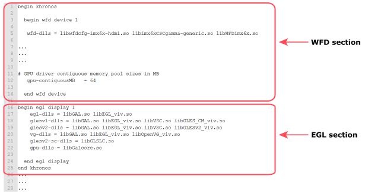

Say that you have a splash screen application that runs on a NXP i.MX6 SABRE for Smart Devices Platform (SABRE Smart) board and the splash screen application is called splash screen_application.

alloc-config = imx6xbuf ...
The name of the memory allocator file is screen-imx6xbuf.so because the value is prefixed with screen- and suffixed with .so.
display driverfiles determined from the previous example graphics.conf file are as follows:
| File | Purpose |
|---|---|
| graphics.conf | The Screen service configuration file |
| csc_gamma.conf | Configuration file for CSC gamma |
| libwfdcfg-imx6x-hdmi.so | The HDMI device driver |
| libimx6xCSCgamma-generic.so | Generic board CSC Gamma library |
| libWFDimx6x.so | Generic board WFD library |
libscrmem.so |
Memory manager for Screen |
| libWFD.so | Driver for WFD |
| screen-imx6xbuf.so | The library to allocate buffers |
| libscreen.so | The Screen library |
Since the splash screen application shows a PNG image (static image), these are the application-specific libraries for our example:
| File | Purpose |
|---|---|
| splash_screen_application | Your splash screen application, which you create |
| img_codec_png.so | The codec required to show an image |
| libimg.so | The Image library to render an image |
| img.conf | The configuration file to configure the codec for the Image library |
| splash screen_application.png | The static graphic (content) to show on the display |
The candidate files that can be loaded in the secondary IFS or a filesystem are listed in the EGL section of the graphics.conf file for your board. To improve the startup time for Screen, we recommend that you put these files in the secondary IFS if you need them loaded into memory.
For example, if your system applications use OpenGL ES hardware rendering, blitting, etc., but your splash screen application doesn't, you can put the OpenGL ES libraries in the secondary IFS. From the previous sample graphics.conf file for the SABRE Smart board, these are the files that you could include in your secondary IFS: